Александр Федотов
Программист-исследователь, кандидат технических наук по специальности 05.11.13 "Приборы и методы контроля природной среды, веществ, материалов и изделий"
Интересы: разработка программно-аппаратных комплексов | выполнение научно-исследовательских работ | публикации в научных журналах | патентование изобретений | обработка и распознавание сигналов, изображений | машинное обучение | программирование игр, десктоп и веб-приложений
Языки и технологии: C#: WinForms, WPF, Unity 3D | Python+Linux: OpenCV, Flask | Web: HTML, CSS, JS | Arduino: модули, датчики, работа с АЦП | Моделирование: Matlab | Нейронные сети: NeuralLibrary (самописная C# библиотека), YOLO, MASK R-CNN, ESRGAN, DAIN и др. | Неразрушающий контроль: патенты на изобретение 2676386, 2463590, 2490153, 2687177
Прототип программно-аппаратного комплекса для распознавания состояния трубопровода анализом зондирующих акустических сигналов (по патенту на изобретение №2676386 с добавлением работы многослойного персептрона)
-
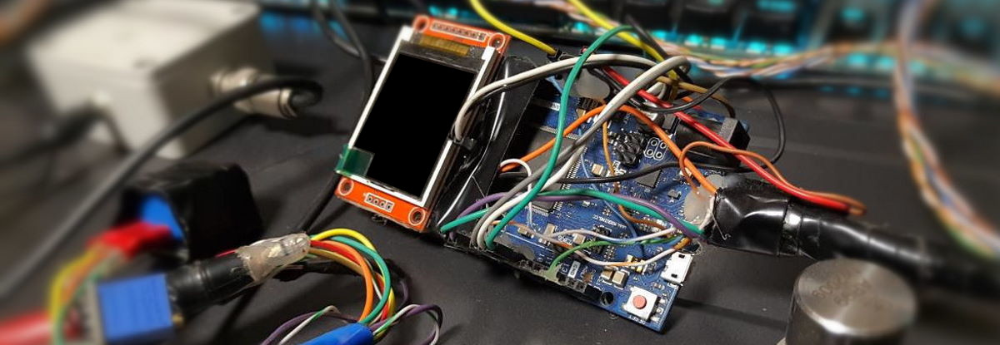
- Разработка является практическим результатом исследования возможности автоматического обнаружения и распознавания несанкционированных воздействий на нефте-, газо- и водопроводы посредством периодического воздействия на него упругими колебаниями, их регистрации и классификации
- Возможна адаптация под обнаружение изменений в функционировании различных агрегатов и распознавании предметов, устанавливаемых на чувствительную поверхность
- Одна из потенциальных областей применения - охранные комплексы, так как система реагирует на бесшумное прикосновение к контролируемому объекту и изменение его характеристик (поворот задвижки, изъятие элементов из системы и т.д.)
- Возбуждение и регистрация упругих колебаний в контролируемом объекте с помощью микроконтроллера, генератора импульсов, пьезоэлектрического акселерометра
- Передача накопленных сигналов от микроконтроллера в C# WinForms-приложение через USB -> COM-порт для тренировки БПФ-классификаторов и нейронной сети
- Обучение распознаванию заключается в формировании "эталонных" состояний контролируемого объекта посредством его зондирования импульсами упругих колебаний в штатном режиме с последующим внедрением имитаторов состояний
- Распознавание текущего состояния объекта в C#-приложении посредством непрерывного сравнения поступающих импульсов с известными классами сигналов
- Построение многослойного персептрона, его обучение и работа реализованы подключением моей небольшой DLL-библиотеки: github.com/alexfcoding/NeuralLibrary
- Обнаружение и распознавание состояния объекта оборудованием в связке с ПО на C# (USB -> COM-порт для связи)
- Обнаружение и распознавание объектов на чувствительной поверхности оборудованием в связке с ПО на C# (USB -> COM-порт для связи)
- Автономное обнаружение отклонения состояния объекта от нормы с помощью оборудования без подключения к ПК. Распознавание двух состояний: "Штатное"/"Отклонение"
- Программный режим: загрузка и анализ записанных WAV-файлов для исследования и классификации
- Микроконтроллер на Atmel SAM3X8E ARM Cortex-M3 (Arduino Due) для генерации сигнала, его регистрации с помощью АЦП, когерентного накопления, корреляции, отображения его формы на дисплее, а также передачи сигналов C# приложению для обработки через COM-порт
- Генераторы периодических импульсов (электромагнитный актуатор - работа в дальней зоне на дистанции более 300 м, электромагнитное реле - для демонстрационного стенда)
- Пьезоэлектрический акселерометр + усилитель сигнала
- Создание списка из любого количества состояний (распознаваемых классов) и сопоставление соответствующих изображений для индикации результата распознавания
- Прием накопленных импульсов от микроконтроллера через COM-порт или загрузка записей из WAV-файлов
- Повышение отношения сигнал/шум алгоритмом когерентного накопления импульсов
- Быстрое преобразование Фурье для сигналов. Построение амплитудного спектра текущего сигнала, его формы, доверительных интервалов
- Обучение нейронной сети на сигналах
- Обучение БПФ классификаторов
- Опция извлечения признаков состояний
- Распознавание состояний на основе решений от БПФ классификаторов и нейронной сети
- Вывод изображения распознанного состояния на экран
Акустическое распознавание состояния объекта на демонстрационном стенде
Акустическое распознавание класса объекта, устанавливаемого на чувствительную поверхность
Эксперимент по распознаванию несанкционированной деятельности на водопроводе (имитация создания шурфа, установки оборудования на трубу для врезки)
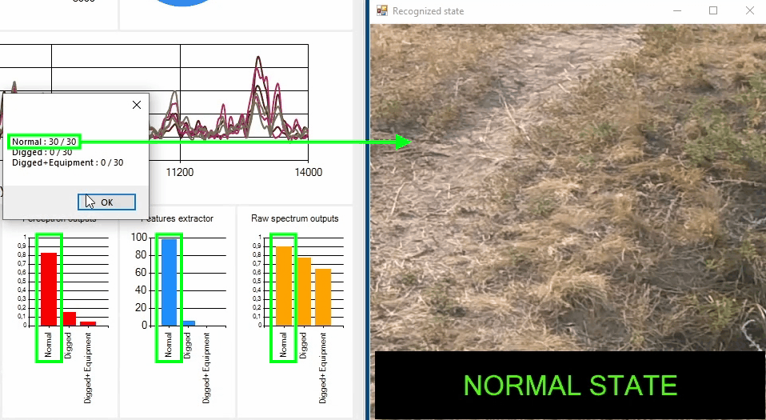
Распознавание сигналов тремя классификаторами
Описание
Принцип работы
Режимы работы
Аппаратная часть
Программная часть (C#)
Основные публикации по проекту
Способ обнаружения несанкционированных воздействий на трубопровод : пат. 2676386 Рос. Федерация - 2018
Способ обнаружения изменений параметров среды в окружении заглубленного магистрального продуктопровода : пат. 2463590 Рос. Федерация - 2012
Алгоритм обнаружения несанкционированных воздействий на трубопровод / журнал "Энергетик" (ВАК) - 2019
О вероятности ошибки обнаружения несанкционированных воздействий на трубопровод / журнал "Омский научный вестник" (ВАК) - 2019
Идентификация несанкционированных воздействий на трубопровод / журнал "Энергосбережение и водоподготовка" (ВАК) - 2018
О помехоустойчивости активного виброакустического способа / журнал "Омский научный вестник" (ВАК) - 2018
Амплитудно-частотный спектр виброакустического сигнала при ударном воздействии на трубопровод / журнал "Энергосбережение и водоподготовка" (ВАК) - 2018
Влияние факторов окружающей среды на распространение упругих колебаний в трубопроводе / журнал "Омский научный вестник" (ВАК) - 2018
Активный помехоустойчивый виброакустический способ контроля состояния магистрального трубопровода / диссертация - 2017
Активный помехоустойчивый виброакустический способ контроля состояния магистрального трубопровода / автореферат - 2017
С# DLL библиотека с демонстрационным приложением для создания, тренировки, валидации моделей нейронных сетей
- Построение нейронных сетей различной структуры на основе ООП-методологии
- Обучение нейронных сетей с заданной скоростью обучения, итерациями, эпохами, обучающими выборками
- Пользовательский интерфейс для построения многослойного персептрона с любым количеством слоев и нейронов
- Функция активации - сигмоида
- Законы распределения начальных значений весов: нормальный и равномерный
- Валидация модели с построением в реальном времени графиков ошибок, значений весов, входных и выходных сигналов
- Сохранение модели в файл на любом этапе обучения, загрузка из файла с просмотром конфигурации сети
- DLL для применения нейронных сетей в проектах
- Расчет производительности обучения с индикацией оставшегося времени до завершения
- Обучение модели распознавать изображения. Протестирован набор MNIST в png формате. Точность 95.5% для 10 цифр. Тренировка выполнялась за 5 эпох по 50000 картинок, валидация - 5000)
- Обучение модели распознавать зашумленные синусоидальные сигналы
- Рисование мышью для обучения нейронной сети распознавать произвольные изображения пользователя
- Аппроксимация сигналов с помощью нейронной сети
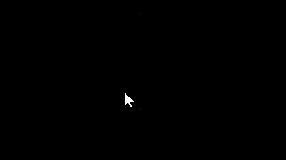
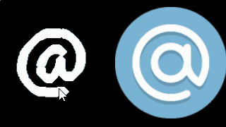
Тест распознавания символов и цифр
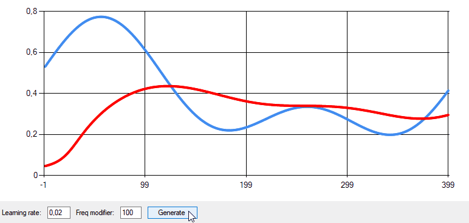
Аппроксимация произвольного сигнала многослойным персептроном
Создание и обучение сети + быстрый тест на распознавание 5 цифр MNIST
Создание и обучение сети + тест на распознавание 25 зашумленных синусоидальных сигналов
Построение и обучение двух сетей: для распознавания цифр и символов + сохранение моделей и загрузка из файлов с валидацией
Описание
Функционал демонстрационного проекта
Linux+Python+Flask+OpenCV+cuDNN онлайн редактор видеофайлов/изображений/потока с Youtube и IP-камер с задействованием средств OpenCV и моделей нейронных сетей: YOLO, Mask R-CNN, Caffe, DAIN, EDSR, LapSRN, FSRCNN, ESRGAN
Мануал по компиляции OpenCV в Linux для Nvidia GPU
Галерея с результатами обработки
- Linux+Python+Flask+OpenCV+cuDNN онлайн редактор видеофайлов/изображений/потока с Youtube и IP-камер с предпросмотром кадра на веб-странице в реальном времени для распознавания объектов и их скачивания, сегментации, повышения разрешения, колоризации, стилизации, интерполяции кадров, с задействованием средств OpenCV и моделей нейронных сетей: YOLO, Mask R-CNN, Caffe, DAIN, EDSR, LapSRN, FSRCNN, ESRGAN
- Интерфейс пользователя состоит из двух страниц: главная и редактор. Главная - для выбора режима, загрузки файла или указания источника видео (Youtube, IP-камера), а также запуска редактора
- Одновременная работа пользователей на различных устройствах и вкладках браузера реализована предоставлением каждому пользователю уникального порта. При старте редактора для каждого пользователя на сервере запускается отдельный процесс
- Для работы некоторых режимов потребуется Linux и компиляция OpenCV с GPU-ускорением и библиотекой cuDNN, мануал тут: github.com/alexfcoding/OpenCV-cuDNN-manual
- Рендеры, созданные в редакторе можно посмотреть здесь: alexfcoding.github.io/PyCameraServer
- OS: Ubuntu 20.04 LTS
- GPU: NVIDIA RTX 2060
- NVIDIA driver: 440
- OpenCV 4.3
- CUDA 10.0
- cuDNN 7.6.4
- Python 3.8
- Flask 1.1.2
- PyTorch 1.4.0
- Файлы изображений: png, jpg, gif
- Видеофайлы: mp4, avi, m4v, webm, mkv
- Youtube: URL-ссылка на видео или стрим
- IP камеры: URL-ссылка на MJPEG-камеру без логина и пароля
- С применением нейронных сетей:
- (GPU/CPU) YOLO: Распознавание объектов в кадре, их подсчет в классах с возможностью скачивания объектов в zip-архив
- (GPU/CPU) YOLO: Размытие распознанных объектов и стилизация ASCII-символами
- (GPU/CPU) Mask R-CNN: Распознавание объектов и сегментация, подсчет в классах
- (GPU/CPU) Mask R-CNN: Преобразование фона за распознанными объектами в черно-белый цвет
- (GPU/CPU) Mask R-CNN: Гауссово размытие фона за распознанными объектами
- (GPU/CPU) Mask R-CNN: Замена фона анимацией из видеофайла
- (GPU) Caffe: Колоризация черно-белого видео нейронной сетью
- (CPU) EDSR / LapSRN / FSRCNN: повышение разрешения в 4 раза
- (GPU) ESRGAN / RRDB_PSNR: повышение разрешения в 4 раза с помощью обученных моделей: "FALCOON", "MANGA109", интерполяция "ESRGAN/RRDB_PSNR" с коэффициентами 0.2, 0.4, 0.6, 0.8). Модели можно выбирать на странице и добавлять новые (пока только правками в коде)
- (GPU) Depth-Aware Video Frame Interpolation: повышение плавности видео созданием новых промежуточных кадров (повышение fps x2, x4, x8)
- Средствами OpenCV без применения нейронных сетей:
- (CPU) Повышение резкости в сочетании с шумоподавлением
- (CPU) Рендер ASCII-символами
- (CPU) Стилизация под мультфильм
- (CPU) Стилизация "рисование карандашом"
- (CPU) Фильтр Собеля
- (CPU) Двухцветный режим с применением кластеризации k-means
- Содержит видео-превью для каждого режима
- Запуск редактора с выбранным режимом обработки и источником
- Предпросмотр загруженного видео, файла изображения или источника на веб-странице в реальном времени
- Обработка кадров с выбранным режимом и настройками, скачивание файла с рендером
- Создание скриншотов.
- Перемотка видеофайла или Youtube-видео с помощью слайдера
- Переключение оригинала/обработанного кадра кнопкой на странице
- Смена режима обработки и позиций слайдеров настроек без перезагрузки страницы или остановки видео (AJAX)
- Просмотр свойств источника, прогресса обработки и статистики работы сервера в реальном времени (RAM, CPU, FPS, разрешение кадра)
- Остановка обработки на сервере по таймеру в случае, если пользователь закрыл вкладку в браузере

Веб-страница редактора: распознавание объектов на видео нейронной сетью YOLO с GPU-ускорением на Linux-сервере

Веб-страница редактора: повышение разрешения загруженного изображения нейронной сетью ESRGAN с GPU-ускорением на Linux-сервере

Веб-страница редактора: стилизация под мультфильм

Стилизация под мультфильм
Главная страница / Распознавание и скачивание объектов YOLO zip-архивом / Отрисовка ASCII символами (видеофайл, Youtube, IP-камера)
Колоризация черно-белого видео на Youtube / Повышение разрешения с помощью моделей: EDSR, LapSRN, FSRCNN, ESRGAN, PSNR / Шумоподавление
Mask R-CNN: Распознавание объектов и сегментация / Редактирование фона / Замена фона анимацией / работа с оператором Кэнни
Мультфильм-стилизация / Карандаш / Фильтр Собеля / Кластеризация k-means до двух цветов
Отображение объектов YOLO и их подсчет в классах
Сегментация изображения с помощью Mask R-CNN
Повышение частоты кадров в 8 раз с Depth-Aware Video Frame Interpolation
Колоризация видео 1920 года
Описание
Протестированная конфигурация
Поддерживаемые форматы и источники
Режимы обработки
Главная страница
Страница редактора
Моделирование акустического сигнала упругих колебаний, формируемых в трубопроводе точечным воздействием на его поверхность
- Impact. Theory and Physical Properties of Impacted Bodies. Goldsmith W., 1960
- Vibration problems in engineering. Timoshenko S.P., Young, D.H., Weaver W., 1967
- Релизация в Matlab
- Синтез формы акустического сигнала, фиксируемого на поверхности трубопровода при точечном воздействии
- Моделирование последовательностей импульсов
- Когерентное накопление сигналов для повышения отношения сигнал/шум
- Установка параметров трубопровода и источника воздействия
- Построение формы сигнала и амплитудно-частотного спектра
- Построение 3d-спектрограммы сигнала
- Наложение помехи на моделируемый сигнал
- Сохранение моделируемого импульса в wav-файл
- Координата воздействия и приема сигнала
- Масса трубопровода
- Протяженность трубопровода
- Толщина стенки трубы и ее диаметр
- Плотность материала стенки трубопровода
- Модуль Юнга
- Коэффициент жесткости основания трубопровода
- Длительность контакта источника колебаний с поверхностью трубы
- Число мод
- Частота дискретизации сигнала
- Длительность сигнала
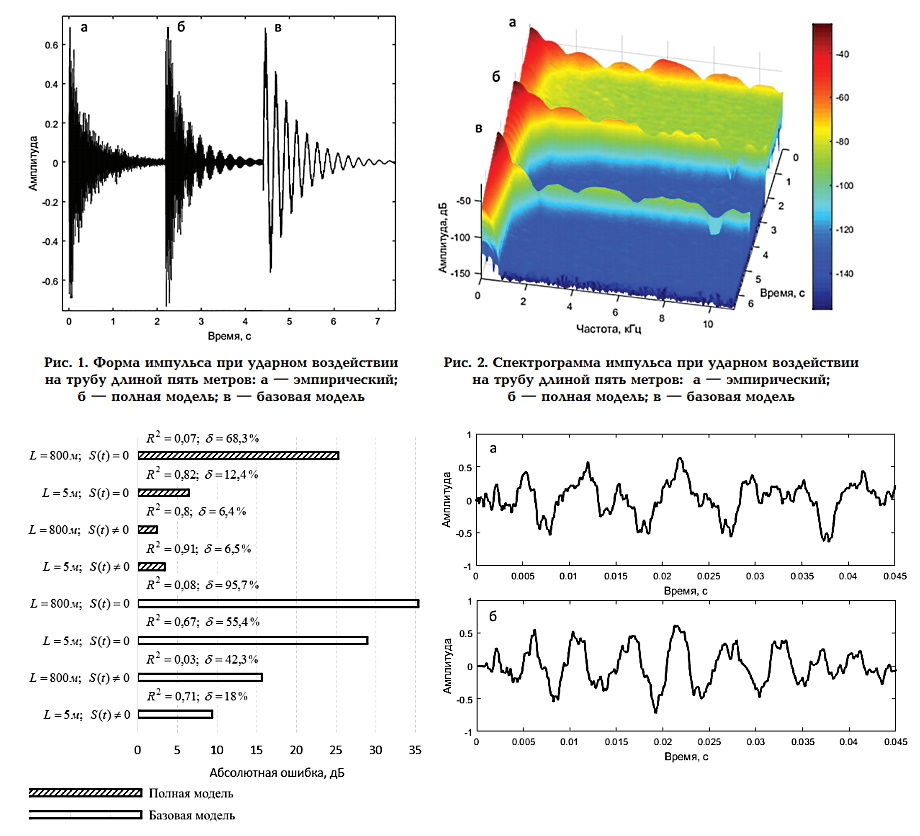
Оценка адекватности моделей сравнением с эмпирическими сигналами
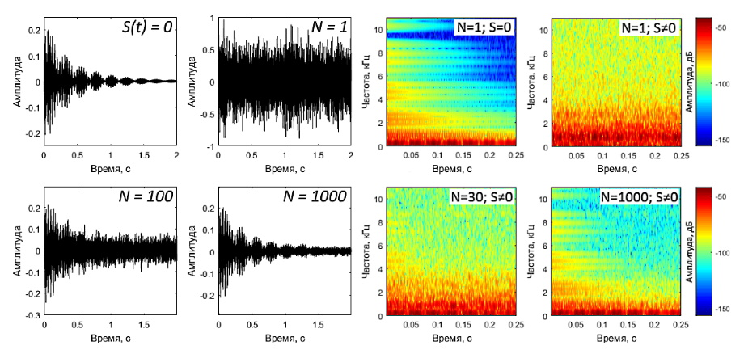
Выделение импульса на фоне помехи когерентным накоплением
Выражение для "базовой" модели генерации амплитуд сигнала
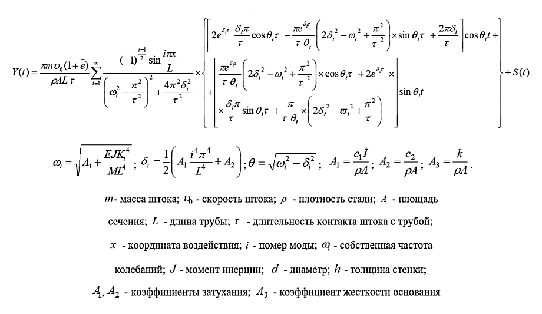
Выражение для "полной" модели генерации амплитуд сигнала
Сгенерированный импульс для трубы длиной 5 метров
Импульс, записанный на трубе длиной 5 метров
Сгенерированный импульс для трубы длиной 190 метров
Импульс, записанный на трубопроводе протяженностью 190 метров
Модели базируются на работах:
Описание
Параметры модели:
Публикации по проекту
Математическая модель упругих колебаний трубопровода при ударном воздействии / "Международный научно-исследовательский журнал" – 2017
Полная модель колебаний трубопровода при ударном воздействии / журнал "Омский научный вестник" - 2018
Оценка адекватности моделей колебаний трубопровода при ударном воздействии / журнал "Омский научный вестник" - 2018
Модель колебаний трубопровода при несанкционированном воздействии / журнал "Омский научный вестник" - 2019
Активный помехоустойчивый виброакустический способ контроля состояния магистрального трубопровода / диссертация - 2017
Активный помехоустойчивый виброакустический способ контроля состояния магистрального трубопровода / автореферат - 2017
Биометрическая аутентификация пользователя по клавиатурному почерку с учетом силы нажатия на клавиши, параметров вибрации и движения рук
Проект на сайте aiconstructor.ru
- Прототип устройства для анализа клавиатурного почерка пользователя с применением дополнительного микроконтроллера и сенсоров
- Модификация не влияет на штатную работу клавиатуры, подключается к ПК через Arduino Leonardo
- Применен USB Host Shield модуль для имитации HID-клавиатуры в операционной системе и перехвата кодов клавиш
- Резистивные датчики давления регистрируют усилие нажатия на клавиши
- Пьезоэлемент непрерывно фиксирует вибрационные характеристики
- Рассчитываются временные периоды между нажатиями клавиш
- Определяются длительности удерживания клавиш и их коды
- Строится амплитудная функция вибрации
- Строятся функции усилия для каждого сенсора
- Обнаруживается одновременное нажатие нескольких клавиш
- Все данные (признаки) передаются в C# приложение посредством последовательного соединения с возможностью экспорта в XML-файлы
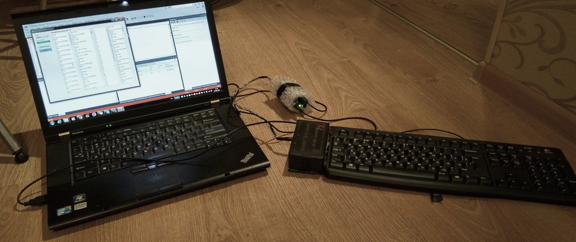

Описание
Публикации по проекту
Идентификационный потенциал клавиатурного почерка с учетом параметров вибрации и силы нажатия на клавиши / журнал "Прикладная информатика" - 2017
Распознавание пользователей компьютерных систем по клавиатурному почерку и дополнительным признакам с помощью специальных датчиков / журнал "Датчики и системы" - 2017
Обнаружение дефектов зубчатого колеса колесной пары с помощью цифровой видеокамеры, магнитопорошковой индикации и C++ приложения с использованием OpenCV
- Программная реализация на C++ Builder и OpenCV
- Решение базируется на основах математической статистики и HSV-преобразовании
- Режим работы с цифровой видеокамерой для обнаружения дефектов в реальном времени в процессе вращения зубчатого колеса
- Режим загрузки файлов изображений для анализа и настройки программы
- График распределения значений информативного признака дефекта по зубьям
- Просмотр фотографий из интерфейса программы
- Автоматический вывод номера зуба с обнаруженным дефектом во время сканирования
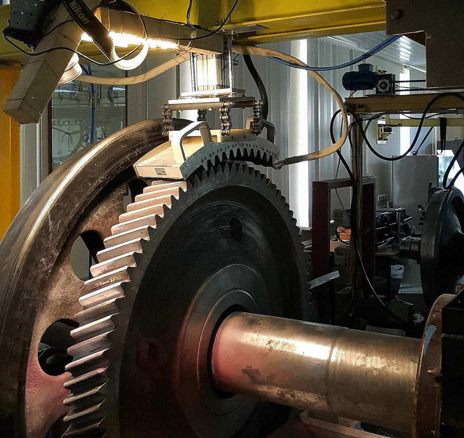
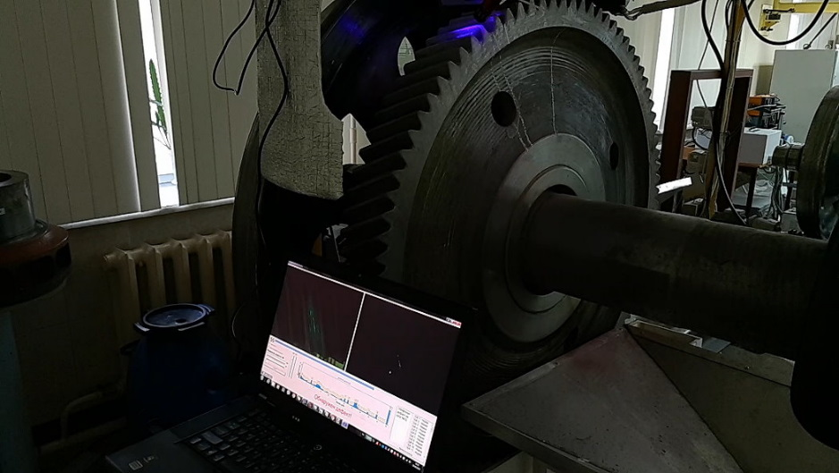
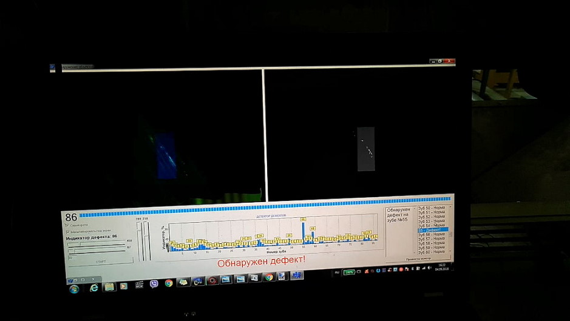
Описание
Фильтрация похожих изображений применением перцептивного хеширования
- Небольшой скрипт на Python + OpenCV с предпросмотром процесса фильтрации изображений
- Перемещает все похожие изображения или их дубликаты из выбранной директории
- Пользователь задает путь к папке с изображениями, папку для перемещения, размер хеша и коэффициент чувствительности (от 0 до 100, где 0 - абсолютная схожесть изображений, только дубликаты будут перемещены)
- Сжатие изображения до размера NxN пикселей
- Конвертация пикселей в черно-белый
- Расчет среднего значения цвета всех пикселей
- Создание нового изображения (хеш): если значение цвета пикселя превышает среднее, то делаем его белым, в противном случае - черным
- Сравнение хешей всех изображений используя расстояние Хэмминга
- Изображения считаются схожими и перемещаются из указанной папки, если разница между количеством одинаковых пикселей не превышает порог чувствительности, заданный пользователем
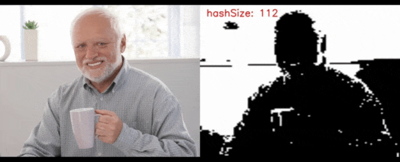
Генерация хеша

Поиск похожих изображений
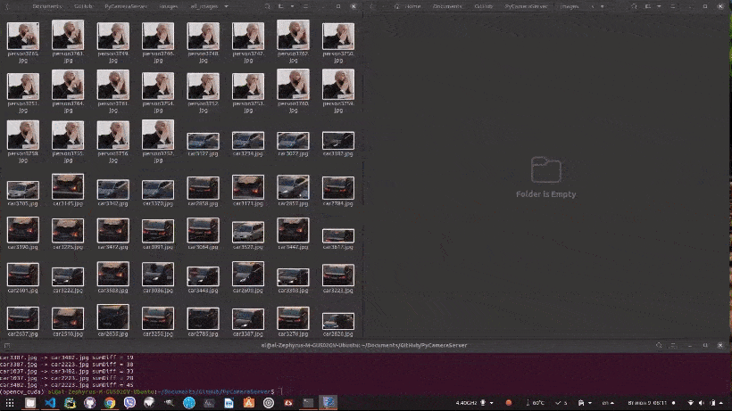
Перемещение похожих изображений в другую папку (правая колонка), оставлены только уникальные (левая)
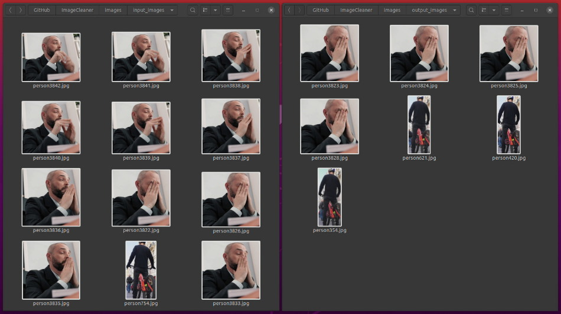
Порог чувствительности 2% (перемещены почти идентичные изображения)
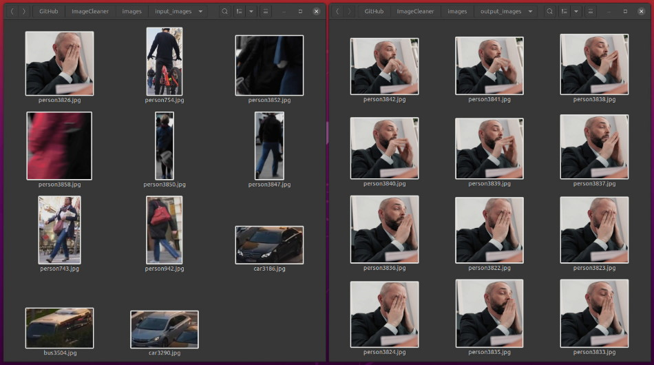
Порог чувствительности 33% (175 изображений из 186 были перемещены, остались только уникальные)
Описание
Алгоритм
Отрисовка изображений ASCII-символами и египетскими глифами
- Реализация на C# WPF
- Преобразует выбранные изображения в символьный вид
- Режим отрисовки египетскими глифами
- Режим отрисовки ASCII-символами
- Опции наложения символов на исходное изображение, либо на черный фон
- Выбор библиотек для рендера: GDI+, System.Windows.Media или Python-скрипт
- Настройка размера символов и размера сетки с помощью слайдеров
- Просмотр изображений в галерее до и после обработки
- Сохранение изображений в файл
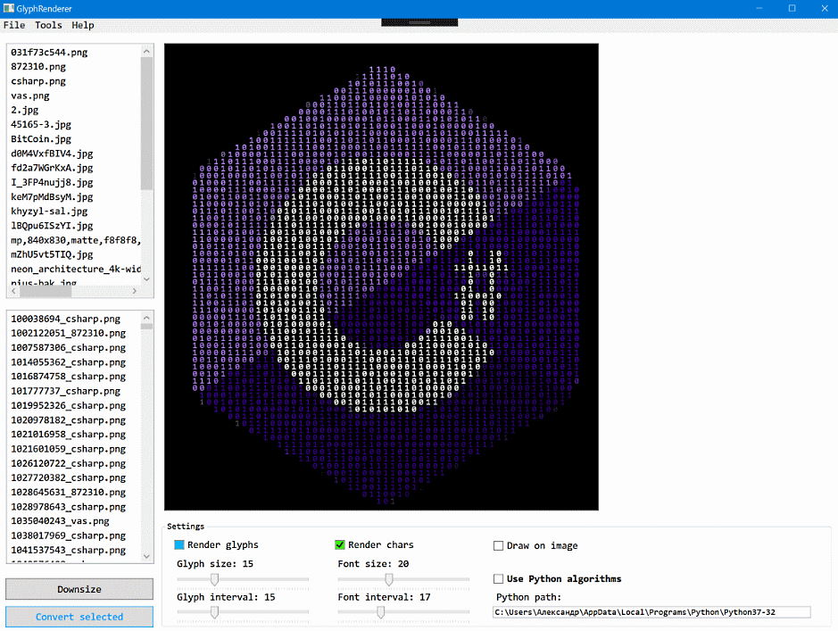
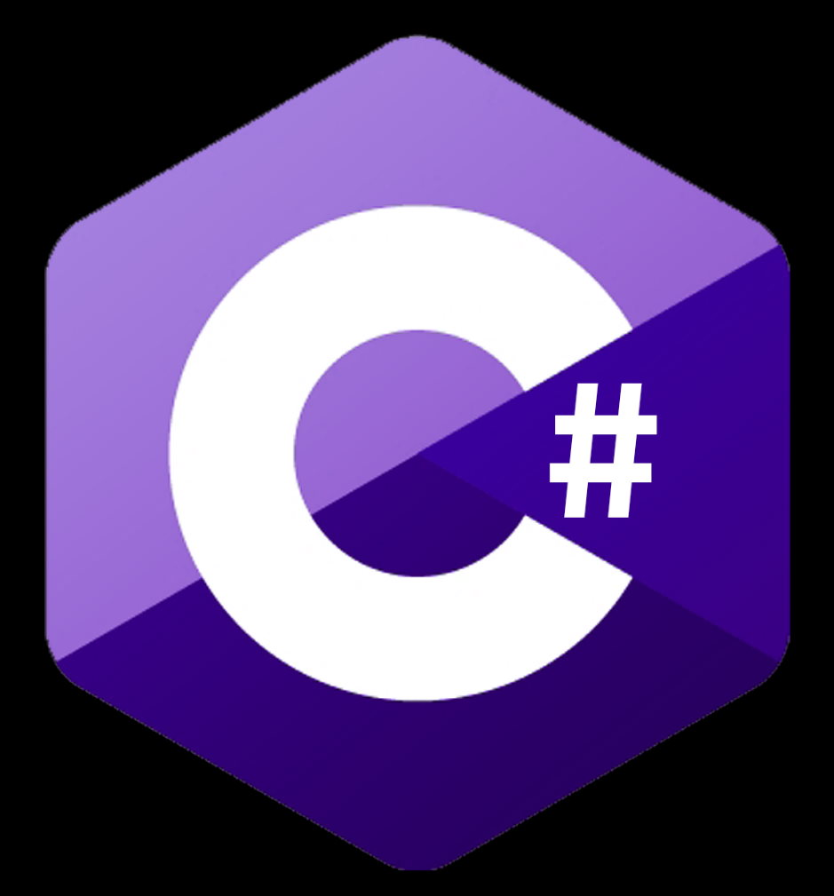
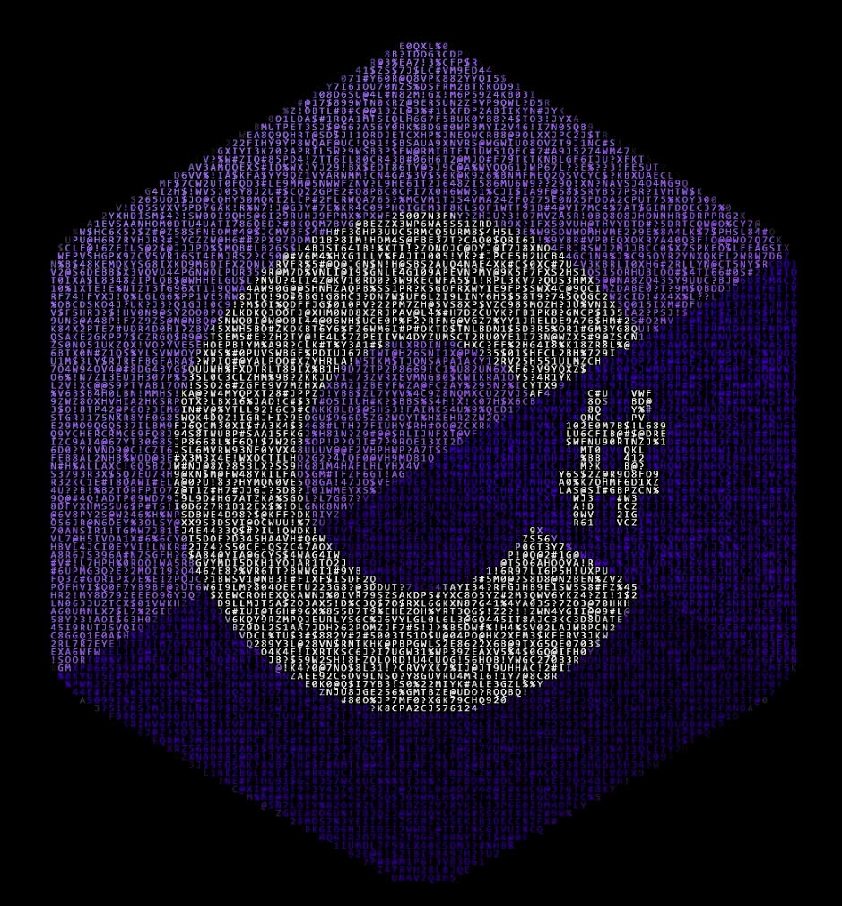
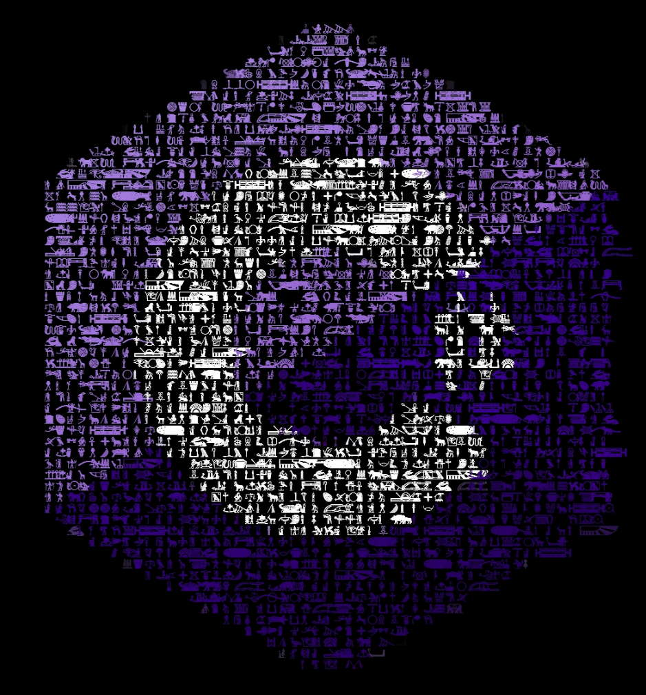
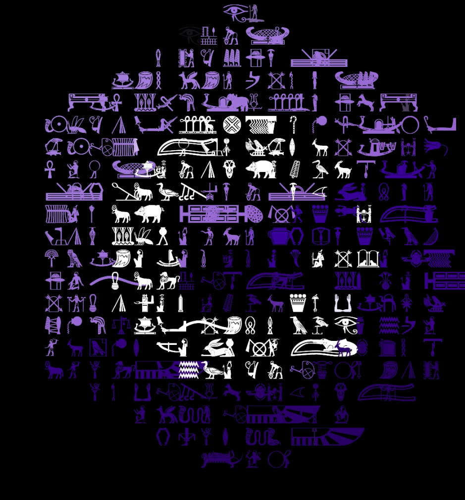
Описание
RTS Sandbox: набор C# Unity классов для создания аркадных/стратегических игр со строительством, экономикой, добычей ресурсов и противоборством сторон
- Реализация на C# в Unity 3D
- Представляет собой набор скриптов (24 класса) для создания аркадных/стратегических игр со строительством, простой экономикой и добычей ресурсов
- Вся логика работы и классы написаны с нуля, из сторонних ассетов только бесплатные 3d-модели, текстуры, звуки и некоторые эффекты
- Два режима работы: с игроком и автономно (ИИ против ИИ)
- Все объекты могут быть разрушаемыми
- Мир создается процедурно, без расстановки объектов на карте в редакторе
- Юниты, ракеты, бомбы, ресурсы и корабль игрока - твердые тела, подчиняющиеся внешним силам (перемещение, взрывы, столкновения)
- Производительность более 30fps в демонстрационном проекте обеспечивается при размещении до 1200 объектов в кадре на i7 9750h + RTX 2060
- Принцип "все против всех"
- На карту помещается произвольное количество баз и ресурсы
- Объекты каждой фракции имеют свою уникальную подсветку для опознавания
- Противники воюют между своими базами и игроком
- Корабли-сборщики находят ресурсы и отвозят на свои базы
- Объекты ресурсов после сбора кораблем приобретают цвет его фракции
- На полученные ресурсы противники строят заводы для производства пехоты, кораблей, турелей
- С заданной вероятностью противники отправляют юниты атаковать корабль игрока
- Игрок управляет небольшим кораблем, может атаковать противников и их базы
- Игрок строит здания, юниты, добывает ресурсы и отвозит на базу
- Игрок групирует юниты и отдает приказы (следовать в любую точку карты, за объектом, либо атаковать)
- После уничтожения базы возможность строительства у фракции прекращается
- Любой юнит, включая игрока, может подбирать оружие (пулеметы, ракеты, бомбы)
- У каждого юнита есть уровень развития, который повышается при уничтожении противника
- Ресурс - физический объект, который надо подобрать, либо выбить из противника
Пример разработанной игры с применением бесплатных ассетов моделей и текстур (Игрок / ИИ / ИИ)
Тест на 600 юнитах (ИИ против ИИ)
Пять противоборствующих фракций (ИИ против ИИ)
Описание
Логика